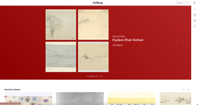

Gallang
React / javascript / Firebase
Project
Overview
Designers often create mood-boards, for example using Pinterest or Miro, to explore the design space. The images provided by these resources are often inconsistent in quality and the recommendation engines hinder, to some degree, truly imaginative and free inspiration. A digital mood-board bringing together several different sources of high-quality media, for example, stock photography, art galleries, fonts, etc. could lead to more effective exploration of the design space.
Technologies
React
Firebase
Javascript
Flask
Back